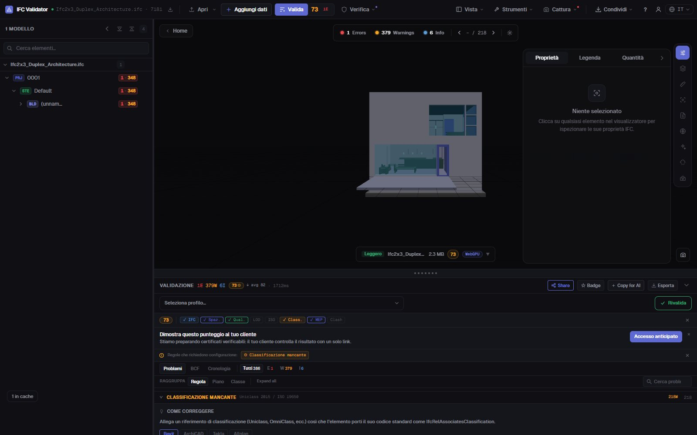
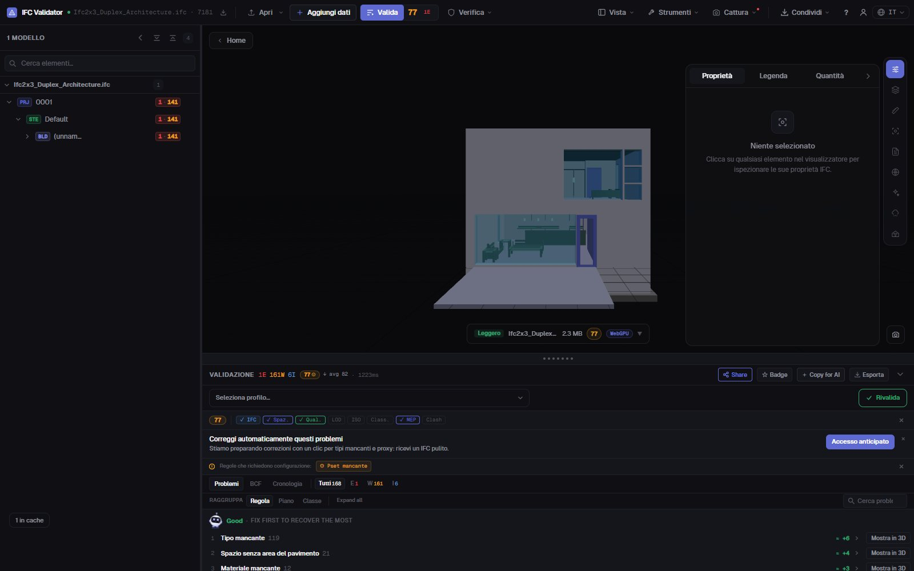

Verifica classificazione IFC
Uniclass, OmniClass, Pset
Trova ogni elemento di un IFC senza riferimento di classificazione — di qualsiasi sistema o solo di quelli richiesti dal tuo capitolato informativo — insieme ai set di proprietà mancanti, ai valori vuoti e ai nomi fuori convenzione. Ogni risultato è elencato, contato e mostrato in 3D.
Verifica la classificazione — gratis →Senza account · Nessun caricamento · Nel tuo browser · Gratis

Cosa puoi fare
Controlli di classificazione e dati per una consegna
Ciò che un BIM coordinator verifica prima di accettare un modello nell’ACDat.
Classificazione mancante
Ogni elemento fisico senza IfcClassificationReference, di qualsiasi sistema o solo di quelli indicati (Uniclass 2015, OmniClass, CCS, NL-SfB…).
Classificazione tramite IDS
Carica un file IDS buildingSMART per richiedere sistema e codice per tipo di elemento; la facet di classificazione IDS è supportata completamente.
Validazione dei Pset
Set di proprietà obbligatori mancanti e proprietà con valore vuoto, per classe di elemento.
Convenzione dei nomi
Confronta i nomi con gli schemi del tuo BEP, oltre a nomi vuoti e duplicati (rinominabili in blocco).
Visibile in 3D
Isola nel modello gli elementi che non superano un controllo, con il resto trasparente, e vai a ciascuno.
Esportabile
Invia i risultati in BCF all’autore, o scarica un CSV, un report JSON o un report di consegna stampabile.
Schermate

FAQ
Domande frequenti
Come verifico la classificazione di un modello IFC?
Apri l’IFC in IFC Viewer Online e valida con la regola di classificazione attiva (i profili ISO 19650 e coordinamento la includono). Elenca ogni elemento senza riferimento di classificazione e li mostra in 3D. Per richiedere sistema e codice per tipo di elemento, carica un file IDS.
Quali sistemi di classificazione sono supportati?
Qualsiasi sistema salvato come IfcClassification / IfcClassificationReference: Uniclass 2015, OmniClass, CCS, NL-SfB, CoClass, MasterFormat o il tuo. Puoi accettare qualsiasi sistema o solo quelli indicati.
Valida anche i set di proprietà?
Sì. Le regole segnalano Pset obbligatori mancanti e valori vuoti, e un file IDS può richiedere proprietà, tipi di dato e valori precisi.
Il modello viene caricato?
No. Il controllo gira nel browser con WebAssembly; l’IFC non lascia il tuo computer. Gratis per qualsiasi uso, senza account.
Posso condividere i risultati con l’autore del modello?
Sì: esporta in BCF 2.1 per il suo software, in CSV o JSON, o come report di consegna stampabile.
Sai cosa non è classificato prima che il modello arrivi nell’ACDat.
Classificazione · Pset · Nomi · IDS · BCF
Verifica la classificazione — gratis →